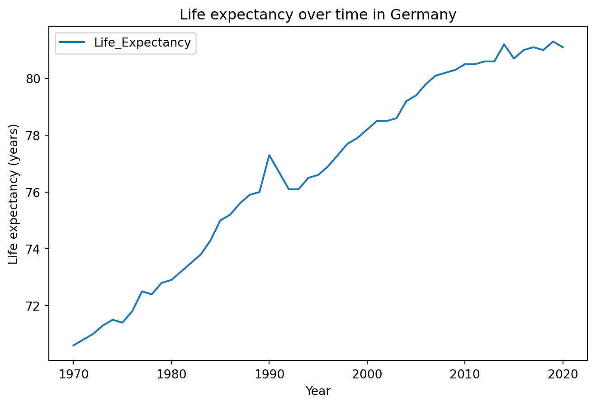
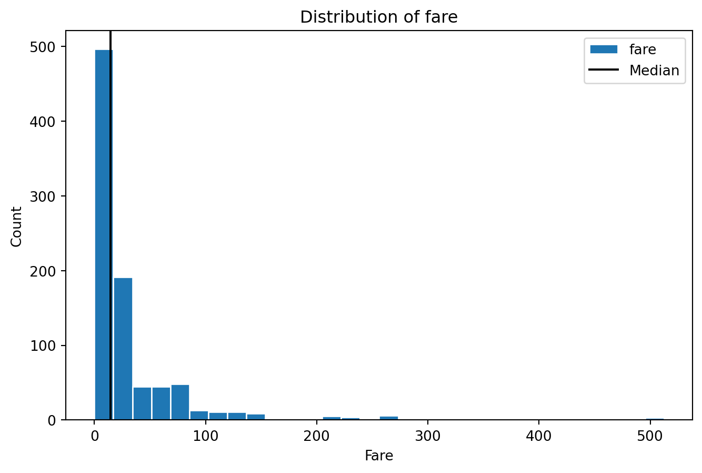
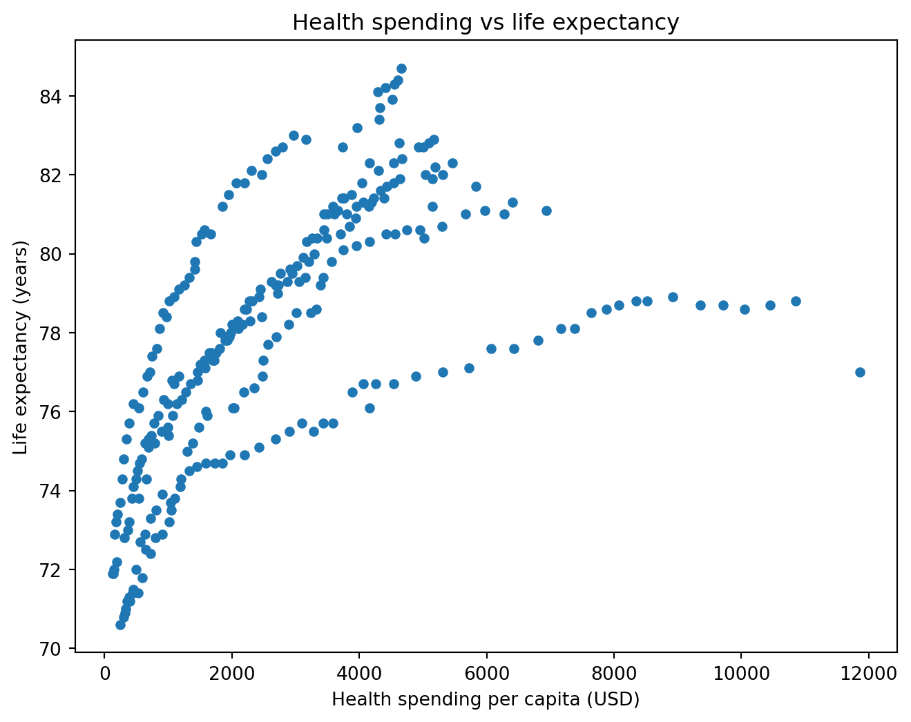
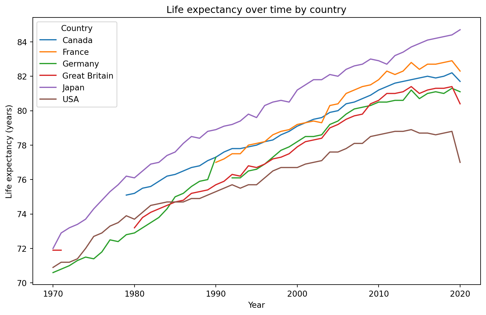

We cover pandas’ built-in .plot() method as a faster alternative to writing matplotlib from scratch.
import matplotlib.pyplot as pltimport pandas as pdplt.style.use("seaborn-v0_8-whitegrid")gapminder = pd.read_csv("data/gapminder.csv")flights = pd.read_csv("data/flights.csv")# ── df.plot() basics ─────────────────────────────────────────annual = flights.groupby("year")["passengers"].sum().reset_index()# kind= switches chart type: "line", "bar", "hist", "scatter"annual.plot(x="year", y="passengers", kind="line", figsize=(8, 4), title="Annual passengers, 1949-1960", xlabel="Year", ylabel="Total passengers", legend=False)plt.tight_layout()plt.show()plt.close()# ── Multi-line charts from wide format ───────────────────────# Reshape to wide: each column becomes a separate line automaticallycontinent_year = gapminder.groupby(["year", "continent"])["lifeExp"].mean().reset_index()continent_year = continent_year.pivot(index="year", columns="continent", values="lifeExp")continent_year.head()continent_year.plot(kind="line", figsize=(10, 5), marker="o", title="Life expectancy by continent", xlabel="Year", ylabel="Mean life expectancy (years)")plt.tight_layout()plt.show()plt.close()# ── Subplots from pandas ────────────────────────────────────# subplots=True creates one panel per column# layout=(rows, cols) arranges them in a gridcontinent_year.plot(kind="line", subplots=True, figsize=(10, 10), layout=(3, 2), title="Life expectancy by continent", sharex=True, sharey=True, legend=True)plt.tight_layout()plt.show()plt.close()
Exercises
Exercise 4.9.1
Recreate a simple line chart using pandas’ .plot() instead of matplotlib directly.
import pandas as pdhealthexp = pd.read_csv("data/healthexp.csv")germany = healthexp[healthexp["Country"] =="Germany"]
Use germany.plot() to create a line chart with x="Year" and y="Life_Expectancy", passing xlabel=, ylabel=, and title= directly as arguments to .plot().
Compare this code to how you would have built the same chart using plt.subplots() and ax.plot() directly. What is missing here that you did not need to write?
Solution
import pandas as pdhealthexp = pd.read_csv("data/healthexp.csv")germany = healthexp[healthexp["Country"] =="Germany"]germany.plot( x="Year", y="Life_Expectancy", figsize=(8, 5), xlabel="Year", ylabel="Life expectancy (years)", title="Life expectancy over time in Germany")

With pandas’ .plot(), there is no need to call plt.subplots() first — pandas creates the Figure and Axes for you behind the scenes. It also accepts xlabel=, ylabel=, and title= directly as parameters, so labelling the chart does not require separate .set_xlabel(), .set_ylabel(), and .set_title() calls at all. This is what makes .plot() convenient for quick, exploratory charts.
Note that .plot() always returns the Axes object, even when you do not assign it to a variable. Capturing it with ax = germany.plot(...) still works exactly as before, and becomes necessary the moment you want to add something .plot() has no built-in parameter for — such as a reference line with ax.axvline().
Exercise 4.9.2
Recreate a bar chart of survival rate by passenger class using .plot(kind="bar").
import pandas as pdtitanic = pd.read_csv("data/titanic.csv")survival_by_class = titanic.groupby("pclass")["survived"].mean()
Use survival_by_class.plot(kind="bar") to create the chart, passing figsize=, xlabel=, ylabel=, and title= directly as arguments.
Look at the x-axis labels. In the matplotlib version of this chart, the numeric pclass index needed to be converted to strings manually to get clean category labels. Does that problem occur here?
No — pandas’ .plot(kind="bar") automatically treats the index as categorical labels, regardless of whether the index is numeric or text. This is one of the small conveniences of pandas plotting: it makes reasonable assumptions about how a Series or DataFrame should be plotted based on its structure, which is why the same fix that was needed with matplotlib is not needed here.
Exercise 4.9.3
Recreate a histogram of Titanic fares using .plot(kind="hist").
import pandas as pdtitanic = pd.read_csv("data/titanic.csv")
Use titanic["fare"].plot(kind="hist"), passing bins=, figsize=, xlabel=, ylabel=, and title= directly as arguments. Assign the result to ax, since you will need it in the next step.
Add a vertical reference line at the median fare using ax.axvline(), exactly as you would for a matplotlib-built histogram.
Solution
import pandas as pdtitanic = pd.read_csv("data/titanic.csv")ax = titanic["fare"].plot( kind="hist", bins=30, figsize=(8, 5), edgecolor="white", xlabel="Fare", ylabel="Count", title="Distribution of fare")ax.axvline(titanic["fare"].median(), color="black", label="Median")ax.legend()

This is a good example of when capturing the returned Axes is necessary: .plot() has parameters for labels and titles, but it has no parameter for adding a reference line. Once you have ax, every matplotlib customization method you have learned — axvline(), legend(), tick formatting, and so on — works exactly the same as it does on an Axes created with plt.subplots(). Pandas plotting is a shortcut for creating the chart, not a separate system for customizing it.
Exercise 4.9.4
Recreate a scatter plot of health spending vs life expectancy using .plot(kind="scatter").
import pandas as pdhealthexp = pd.read_csv("data/healthexp.csv")
Use healthexp.plot(kind="scatter", x="Spending_USD", y="Life_Expectancy"), passing figsize=, xlabel=, ylabel=, and title= directly as arguments.
In the matplotlib version of a scatter plot, you would write ax.scatter(healthexp["Spending_USD"], healthexp["Life_Expectancy"]), passing the two columns positionally. How does specifying the columns differ when using .plot(kind="scatter")?
Solution
import pandas as pdhealthexp = pd.read_csv("data/healthexp.csv")healthexp.plot( kind="scatter", x="Spending_USD", y="Life_Expectancy", figsize=(8, 6), xlabel="Health spending per capita (USD)", ylabel="Life expectancy (years)", title="Health spending vs life expectancy")

With matplotlib’s ax.scatter(), you pass the actual data for the x- and y-axes as two separate arguments — usually df["col1"] and df["col2"]. With pandas’ .plot(kind="scatter"), you instead call .plot() directly on the whole DataFrame and pass the column names as strings to x= and y=, letting pandas look up the data itself. This is generally more convenient when both columns come from the same DataFrame, since you do not need to repeat the DataFrame’s name twice.
Exercise 4.9.5
This exercise contrasts the loop-based approach to multi-line charts from earlier in this topic with pandas’ built-in support for plotting directly from wide-format data.
import pandas as pdhealthexp = pd.read_csv("data/healthexp.csv")
Use .pivot() to reshape healthexp to wide format, with Year as the index, Country as the columns, and Life_Expectancy as the values. Assign the result to healthexp_wide.
Call healthexp_wide.plot() directly, passing figsize=, xlabel=, ylabel=, and title=, with no x= or y= argument. What does pandas do automatically with the index and the columns?
Compare this to how you would have built the same multi-line chart using matplotlib directly — looping over each country, filtering the data, and calling ax.plot() inside the loop each time. What has pandas done for you here that you had to do manually before?
Now call healthexp_wide.plot(subplots=True, layout=(2, 3), figsize=(14, 8), legend=False) to create one panel per country automatically. Compare this to how you built a grid of panels manually in Topic 4.8, looping over countries with enumerate() and .flatten().
Solution
import pandas as pdhealthexp = pd.read_csv("data/healthexp.csv")# 1. Pivot to wide formathealthexp_wide = healthexp.pivot(index="Year", columns="Country", values="Life_Expectancy")print(healthexp_wide.head())
Country Canada France Germany Great Britain Japan USA
Year
1970 NaN 72.2 70.6 71.9 72.0 70.9
1971 72.8 NaN 70.8 71.9 72.9 71.2
1972 NaN NaN 71.0 NaN 73.2 71.2
1973 NaN NaN 71.3 NaN 73.4 71.4
1974 NaN NaN 71.5 NaN 73.7 72.0
# 2. Multi-line chart directly from wide datahealthexp_wide.plot( figsize=(10, 6), xlabel="Year", ylabel="Life expectancy (years)", title="Life expectancy over time by country")

# 4. One panel per country automaticallyhealthexp_wide.plot( subplots=True, layout=(2, 3), figsize=(14, 8), legend=False)
pandas automatically uses the DataFrame’s index (Year) as the x-axis, and draws one line for every column (each country), automatically using the column names as the legend labels. This only works because the data is in wide format — one column per country — which is exactly why the reshaping step in question 1 was necessary first.
In the matplotlib version, you needed to write a for loop, filter the data to one country at a time inside the loop, and call ax.plot() with an explicit label= for each iteration. Here, a single .plot() call on the wide DataFrame does all of that automatically — the reshaping step did the “one series per country” work up front, so pandas could draw every line without any looping at all.
subplots=True together with layout=(2, 3) automatically creates a 2x3 grid, and draws each country’s line in its own panel with the country name as that panel’s title. This replaces the entire manual process from Topic 4.8 — creating the grid, flattening the Axes array, looping with enumerate(), and filtering the data at each step — with a single line of code. The trade-off is control: .plot(subplots=True) decides the layout and defaults for you, while the manual matplotlib approach lets you customize every panel individually if needed.